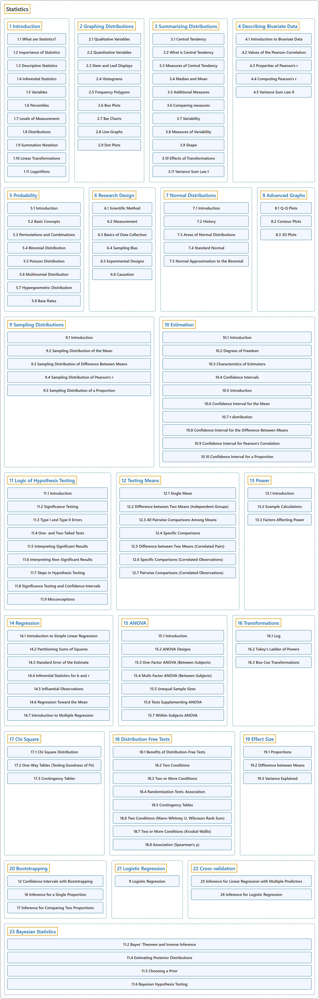

3. Statistics
Classification

Glossary
| Term |
Definition |
中文翻译 |
Source |
Statistics
统计 |
"The mathematical study of the likelihood and probability of events occurring based on known information and inferred by taking a limited number of samples." |
对事件发生的可能性和概率所作的数学研究，依据已知信息，并通过抽取有限数量的样本来推断。 |
Weisstein, n.d., "Statistics" entry, para. 1 |
1 Introduction
介绍 |
(No definition) |
（无定义） |
Online Statistics Education, n.d., chapter 1 |
2 Graphing Distributions
分布的图示 |
(No definition) |
（无定义） |
Online Statistics Education, n.d., chapter 2 |
3 Summarizing Distributions
分布的概括 |
(No definition) |
（无定义） |
Online Statistics Education, n.d., chapter 3 |
4 Describing Bivariate Data
二元数据的描述 |
(No definition) |
（无定义） |
Online Statistics Education, n.d., chapter 4 |
5 Probability
概率 |
(No definition) |
（无定义） |
Online Statistics Education, n.d., chapter 5 |
6 Research Design
研究设计 |
(No definition) |
（无定义） |
Online Statistics Education, n.d., chapter 6 |
7 Normal Distributions
正态分布 |
(No definition) |
（无定义） |
Online Statistics Education, n.d., chapter 7 |
8 Advanced Graphs
高级图形 |
(No definition) |
（无定义） |
Online Statistics Education, n.d., chapter 8 |
9 Sampling Distributions
抽样分布 |
(No definition) |
（无定义） |
Online Statistics Education, n.d., chapter 9 |
10 Estimation
估计 |
(No definition) |
（无定义） |
Online Statistics Education, n.d., chapter 10 |
11 Logic of Hypothesis Testing
假设检验的逻辑 |
(No definition) |
（无定义） |
Online Statistics Education, n.d., chapter 11 |
12 Testing Means
均值检验 |
(No definition) |
（无定义） |
Online Statistics Education, n.d., chapter 12 |
13 Power
检验功效 |
(No definition) |
（无定义） |
Online Statistics Education, n.d., chapter 13 |
14 Regression
回归 |
(No definition) |
（无定义） |
Online Statistics Education, n.d., chapter 14 |
15 ANOVA
方差分析 |
(No definition) |
（无定义） |
Online Statistics Education, n.d., chapter 15 |
16 Transformations
变换 |
(No definition) |
（无定义） |
Online Statistics Education, n.d., chapter 16 |
17 Chi Square
卡方 |
(No definition) |
（无定义） |
Online Statistics Education, n.d., chapter 17 |
18 Distribution Free Tests
非参数检验 |
(No definition) |
（无定义） |
Online Statistics Education, n.d., chapter 18 |
19 Effect Size
效应量 |
(No definition) |
（无定义） |
Online Statistics Education, n.d., chapter 19 |
20 Bootstrapping
自助法 |
(No definition) |
（无定义） |
Çetinkaya-Rundel & Hardin, 2024 |
21 Logistic Regression
逻辑斯谛回归 |
(No definition) |
（无定义） |
Çetinkaya-Rundel & Hardin, 2024 |
22 Cross-validation
交叉验证 |
(No definition) |
（无定义） |
Çetinkaya-Rundel & Hardin, 2024 |
23 Bayesian Statistics
贝叶斯统计 |
(No definition) |
（无定义） |
Poldrack, 2023, chapter 11 |
References
Weisstein, E. W. (n.d.). Statistics. MathWorld: A Wolfram Resource. Retrieved October 27, 2026, from https://mathworld.wolfram.com/Statistics.html
Online statistics education: An interactive multimedia course of study. (n.d.). Rice University, University of Houston Clear Lake, and Tufts University. Retrieved October 29, 2026, from https://onlinestatbook.com/2/
Çetinkaya-Rundel, M., & Hardin, J. (2024). Introduction to modern statistics (2nd ed.). OpenIntro. Retrieved October 28, 2026, from https://openintro-ims.netlify.app/
Poldrack, R. A. (2023). Statistical thinking for the 21st century. Retrieved October 29, 2026, from https://statsthinking21.github.io/statsthinking21-core-site/